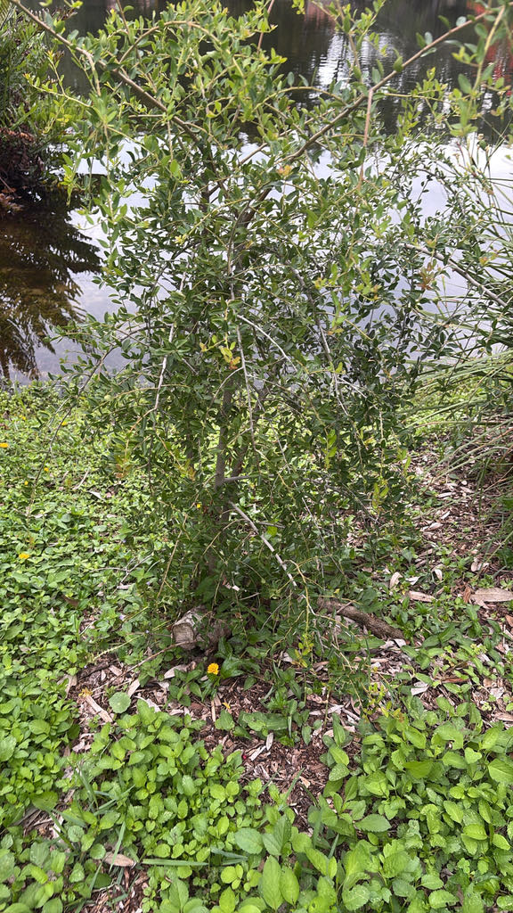

- Yaupon is the only plant native to North America — north of the tropics — that contains caffeine. Every cup of coffee or tea Americans drink comes from plants brought from overseas; this one was here all along, brewing itself in the understory.
- The scientific name Ilex vomitoria is almost certainly a libel. Europeans watched Indigenous ceremonies in which participants drank enormous quantities of the concentrated 'Black Drink' and then purged — but modern researchers believe the plant itself is not an emetic. The vomiting was likely a deliberate act of ritual purification, possibly aided by other additives, not a property of the holly.
- The berries are eaten safely by birds but can cause nausea and vomiting in people and other mammals. Birds and people metabolize them very differently — what is a fine winter meal for a cedar waxwing is not one for you.
- Yaupon spreads by suckering from its roots, forming natural thickets that can become dense enough to exclude competitors — a trait that makes it both an excellent wildlife refuge and a plant that needs managing in a tidy garden.
Yaupon is native to the southeastern coastal plain of the United States, ranging from southeastern Virginia south through the Carolinas and Georgia into Florida, and west along the Gulf Coast through Alabama, Mississippi, Louisiana, and eastern Texas, with populations also in Arkansas, eastern Oklahoma, and northeastern Mexico.
In Florida, UF/IFAS documents it occurring throughout most of the peninsula south to Lake Okeechobee.
Within its range the species occupies a wide variety of habitats: coastal dunes, maritime forests, upland pine flatwoods, scrub, floodplains, and hammocks. It is equally at home in saturated lowlands and dry sandy ridges — a range of tolerance that few native shrubs match. The common name yaupon derives from the Catawban word yop or yapa, meaning 'small tree' or 'leaf of the tree.'
- The story behind the name Ilex vomitoria is one of the more entertaining episodes in botanical nomenclature. Southeastern tribes — including the Apalachee, Creek, Timucua, and Seminole peoples whose homelands included Florida — brewed a caffeinated drink from roasted yaupon leaves known variously as the 'Black Drink' or, among some groups, the 'white drink,' associated with purity and peace.
- During ceremonies, participants drank large quantities until they purged, as an act of ritual purification. European observers assumed the plant was the cause and named it accordingly.
- It almost certainly was not. Yaupon is not considered a true emetic. The purging was likely intentional or aided by other substances, and in ordinary quantities the tea is simply a pleasantly stimulating drink — much like the yerba mate to which it is closely related.
- The Florida Department of State notes that the Apalachee, Creek, Seminole, and Muskogee peoples called the beverage the 'white drink' for its associations with peace and purity, while Spanish colonists in the 16th century called it cacina or cassina, borrowing from the Timucua language.
- The leaves contain caffeine, theobromine, and theacrine — a suite of stimulant alkaloids shared with yerba mate — alongside chlorogenic acid isomers, the same antioxidant polyphenols that give coffee much of its health reputation. Taken together, the chemical profile of a properly brewed cup of yaupon rivals that of green tea in antioxidant content.
- The tea is also notably smooth. Unlike Camellia sinensis — the source of conventional black and green tea — yaupon leaves are free of the catechin-based polyphenolics that create bitterness and astringency. The practical result is a tea that cannot be over-steeped or boiled into harshness, a quality that made it eminently practical for long ceremonies and field use.
- Small artisan producers now sell it commercially, and interest has grown considerably in recent years.
Few native shrubs of this size match yaupon's contribution to the local food web across all seasons. The small white spring flowers draw bees, including the specialized native mining bee Colletes banksi, which has a documented relationship with the genus Ilex.
Yaupon blooms early in spring, providing nectar and pollen when few other understory woody plants are in flower — making it a critical early resource for solitary bees in Florida pinelands.
Butterflies also nectar at the blooms, and the plant serves as a documented larval host for two species: Henry's Elfin (Callophrys henrici) and the Holly Azure (Celastrina idella), whose caterpillars feed on the flowering parts.
In fall and winter the berries — bright red, translucent, and produced in dense clusters along the full length of the stems — become a critical food source for birds. Robins, cedar waxwings, mockingbirds, and more than 40 bird species overall are documented consumers.
Birds process the drupes safely because they pass the hard seeds rapidly through their digestive systems without breaking them down, whereas mammals that chew and retain the berries longer are exposed to the saponins concentrated in the fruit. The dense evergreen canopy provides year-round nesting and shelter cover, and small mammals also feed on fallen fruit.
Few plants deliver this much to wildlife across this many months.
Yaupon is dioecious: male and female flowers are borne on separate plants. Both sexes must be present within pollinator range for berries to form on the females. The species also spreads naturally by root suckering, forming clonal thickets around established plants. Seeds are rarely used to propagate cultivars; stem cuttings from known female plants are the nursery standard.
Holly seeds require two to three years of dormancy before germinating.
Small, white to greenish-white, and four-petaled, appearing in clusters along the previous year's stems in spring. Male flowers emerge in small clusters; female flowers may be solitary or in small clusters in the leaf axils. The blooms are individually tiny but fragrant, and they are produced prolifically enough to be an important pollinator resource.
A small, round drupe about a quarter-inch in diameter, green when young and ripening to bright, somewhat translucent red in fall. Fruit is produced in dense clusters along the full length of the stems on female plants only, persisting on the tree through winter — sometimes well into spring if not consumed by wildlife. Occasional cultivars produce orange or yellow fruit.
The berries are mildly toxic to people and mammals.
Small, oval to elliptic, leathery, and dark glossy green — typically less than an inch long, with finely toothed or scalloped (crenate) margins. Leaves are arranged alternately on slender branches. Bark is smooth and whitish-gray, contrasting well with the red berries in winter.
Established plants readily send up root suckers, forming clonal thickets beneath and around the canopy. This is natural behavior and provides excellent wildlife habitat; in managed landscapes the suckers should be pruned to the ground two or three times a year if a single-trunk form is desired. Disturbance of the soil under the canopy tends to encourage more sprouting.
In winter, the berries tell the story instantly: dense clusters of small translucent red drupes strung along every stem of the female plants, against smooth whitish-gray bark. In spring, look for the tiny white flower clusters tucked into the leaf axils — modest individually but produced so abundantly that the whole shrub seems to hum with pollinators.
The leaves themselves are a useful field mark year-round: small, dark, leathery, and oval with a neatly scalloped edge. If you find a plant with no berries but the same leaf and bark, you may be looking at a male — or simply a plant without a male nearby.
Do not eat the berries. They are mildly toxic to people and most mammals — containing saponins and other compounds that can cause nausea, vomiting, and digestive upset if eaten in any quantity, and they should be considered a hazard for small children.
The same caution applies to dogs; holly berries and leaves carry low but real toxicity for pets, with symptoms including vomiting, diarrhea, and lethargy.
The leaves are a different matter: properly dried and roasted, they have been brewed as a caffeinated tea for centuries and are not toxic when used this way — but preparation matters, and this is not a plant to improvise with. If a child or pet has eaten berries, contact Poison Control (800-222-1222) or your veterinarian.
Yaupon tolerates one of the widest ranges of site conditions of any native Florida shrub — UF/IFAS describes it as growing 'from full sun or shade to seaside or swamps, in sand or clay.' At Palma Sola Botanical Park it is a strong candidate for spots where other plants struggle.
A wide range of cultivars is available: weeping forms ('Pendula'), compact dwarfs ('Schilling's Dwarf,' 'Nana'), narrow upright forms ('Will Fleming'), and berry-color variants. The species itself is clonal and can be propagated by transplanting root suckers from a known female if berries are the goal.

- © Randall Carter (CC-BY-NC), via iNaturalist